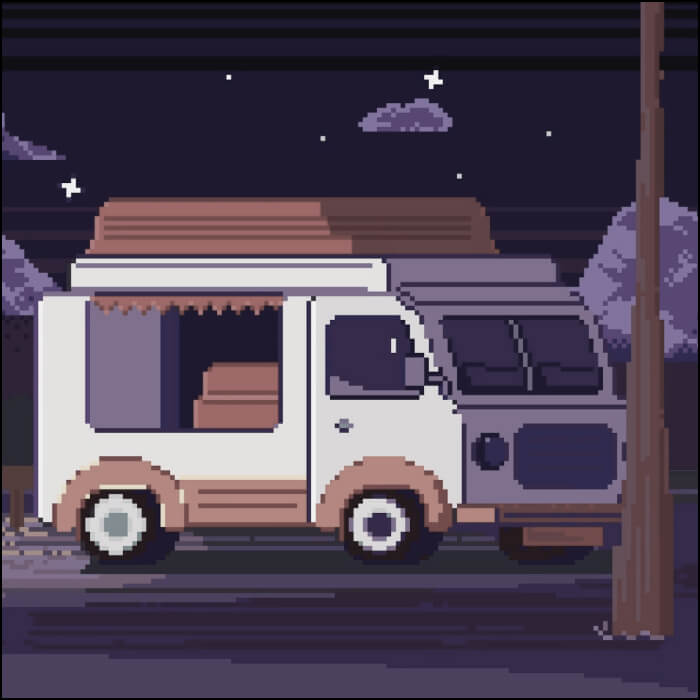
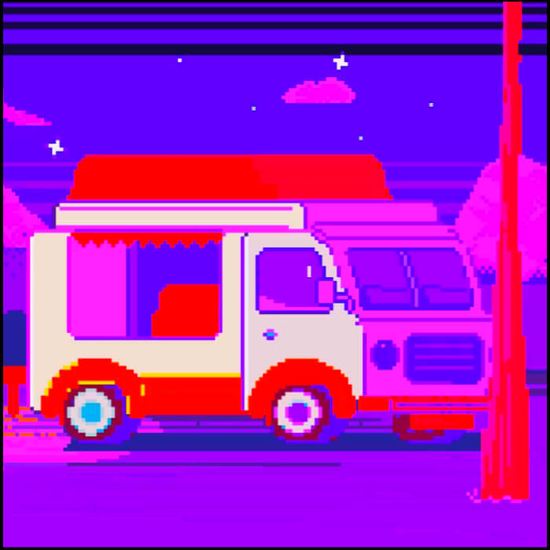
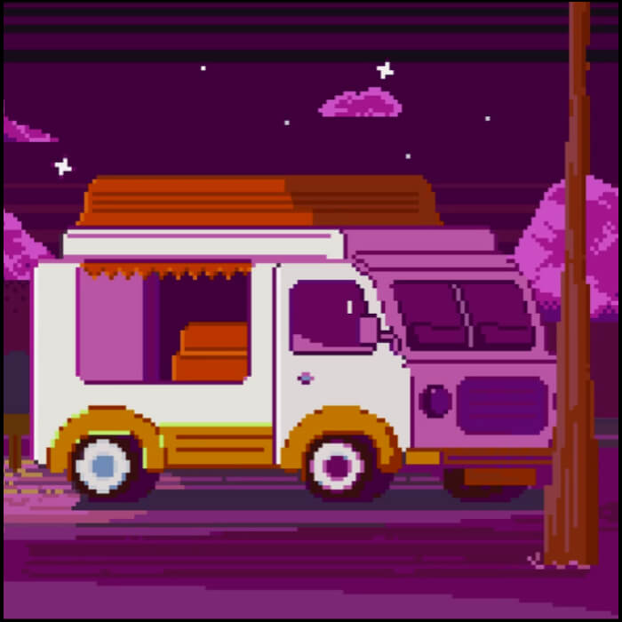
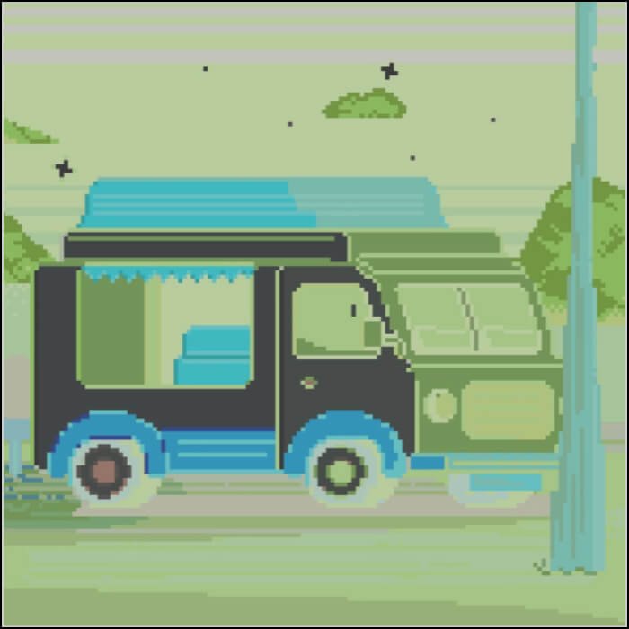
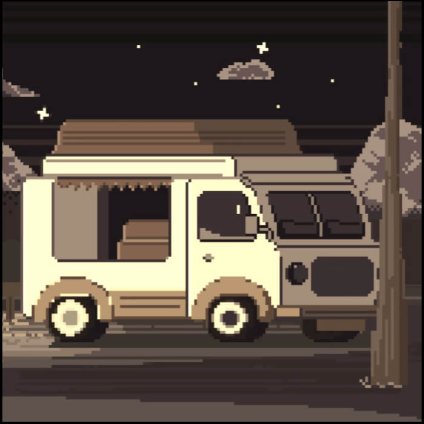
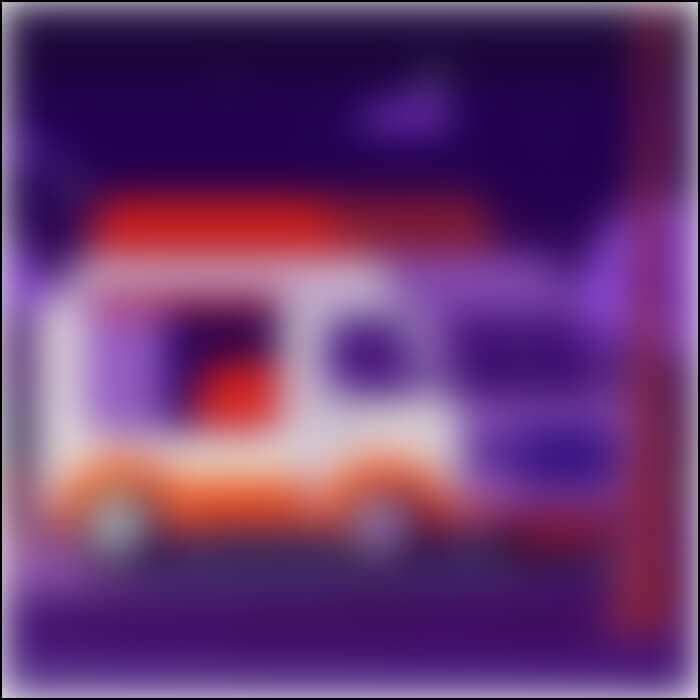
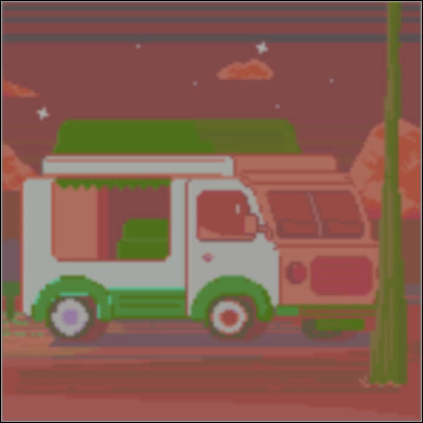

Это было самое начало пути. На этом этапе важно было
проникнуться основами и настроиться на учёбу. И, возможно,
подумать, как новые знания могут повлиять на ваше будущее.
Место для ваших воспоминаний о начале обучения.
1 спринт: Я — чистый лист

На первых этапах мы работали со страхами и сомнениями, которые
часто испытывают новички. Один из них — страх перед чистым
листом. Это, конечно же, намного сложнее, чем боязнь куска
бумаги. Часто за этим ощущением скрываются более глубокие
вопросы: с чего начать? а вдруг будет слишком сложно? что,
если я не справлюсь?
Место для ваших воспоминаний о начале первого спринта.
1 спринт: А если не получится?

Первый проект — позади! Но это всё ещё самое начало пути.
Радость могла быстро померкнуть и смениться ожиданием провала.
Или вы, наоборот, могли вдохновиться успехами и поверить в
себя.
Место для ваших воспоминаний об окончании первого спринта.
2 спринт: Погоня за идеалом

На этом этапе вы уже достаточно разбирались в основах вёрстки,
чтобы понять, как много ещё впереди. Вы могли попытаться
погнаться за идеалом и понять, что он недостижим. А, может, вы
вовсе и не подвержены перфекционизму и вместо того, чтобы
сделать идеально, старались просто сделать.
Место для ваших воспоминаний о начале второго спринта.
2 спринт: О тех, кто рядом

Всё это время вы были не одиноки (хотя, возможно, иногда и
чувствовали, что одни против целого мира). Вас окружали
одногруппники, команда сопровождения и просто близкие люди,
которым можно пожаловаться, если очередной макет просто так не
поддавался. Осваивать что-то новое легче, когда рядом есть
единомышленники, не правда ли?
Место для ваших воспоминаний об окончании второго спринта.
3 спринт: Обходные стратегии

На этом курсе вы постоянно решали разные задачи. В какой-то
момент вам могло показаться, что решения просто иссякли.
Значит, пришло время посмотреть на задачу под другим углом.
Место для ваших воспоминаний о начале третьего спринта.
3 спринт: Когда опускаются руки

Во время учёбы часто возникает чувство, когда не знаешь, за
что хвататься. Вроде и проектную пора сдавать, и задачи
хочется порешать, и в теории получше разобраться, и жизнь не
забыть пожить. В такие моменты очень нужна концентрация.
Вспомните, откуда вы её черпали.
Место для ваших воспоминаний об окончании третьего спринта.
«Сейчас я здесь»

Сейчас вы уже очень много знаете о вёрстке. Но это только
начало. Во-первых, впереди ещё много материала про
«красотищу». Во-вторых, с окончанием курса учёба не
заканчивается. Вёрстка — это целый мир. И этот мир постоянно
меняется. Познать его полностью не получится, но это тот
случай, когда важен сам процесс познания. Ведь часто путь — и
есть результат.
Место, чтобы остановиться, подумать и написать, что вы
чувствуете в этой точке пути.